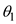
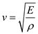

Use law of refraction, the expression for speed of a longitudinal wave in terms of elastic modulus, and expression for specific gravity to solve this problem.
According to the law of refraction,
…… (1)
Here,  is the incident angle,  is the angle of refraction, is the incident wave speed, and is the speed of the refracted wave.
is the angle of refraction, is the incident wave speed, and is the speed of the refracted wave.
The expression for speed of a longitudinal wave in terms of elastic modulus E is,
 …… (2)
Here,  is the density.
is the density.
When a wave crosses the boundary with different speeds and the elastic modulus is constant, then equation (2) can be represented as,
…… (3)
 and calculate the angle of refraction.
and calculate the angle of refraction. , 3.6 for , and 2.5for .
, 3.6 for , and 2.5for .